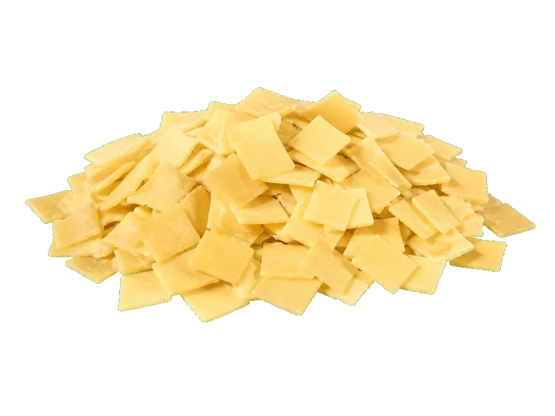

Polskie obiadki
Makaron łazanki (suchy)
Makaron łazanki (suchy): 13 g białka, 371 kcal, 74 g węglowodanów i 1.5 g tłuszczu na 100 g. Kategoria: Polskie obiadki.
Kalorie371 kcalna 100 g
Białko / proteiny13 g
Węglowodany74 g
Tłuszcz1.5 g
Cena (szac.)~0,80 złza 100 g
Ceny zaktualizowano: maj 2026 (szacunek — ceny w popularnych supermarketach)
Porcja: porcja (100g)
| Kalorie | 371 kcal |
|---|---|
| Białko | 13 g |
| Węglowodany | 74 g |
| Tłuszcz | 1.5 g |
| Cena (szac.) | ~0,80 zł |
Szczegółowe składniki odżywcze na 100 g
| Wartość energetyczna (kalorie) | 371 kcal |
|---|---|
| Białko (proteiny) | 13 g |
| Węglowodany | 74 g |
| Tłuszcz | 1.5 g |
| Tłuszcze nasycone | 0.3 g |
| Tłuszcze nienasycone | 1.2 g |
| Witaminy i minerały | Żelazo, Tiamina (B1), Potas |
| Współczynnik kcal / 1 g białka | 28.5 |
| Cena produktu (szac. za 100 g) | ~0,80 zł |
| Cena za 100 g białka (szac.) | ~6,15 zł |